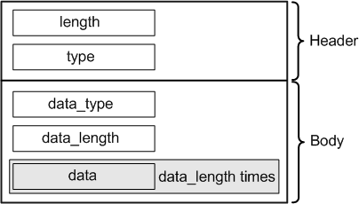

GenericDataFieldAttrType
Contains data that is copied into a generic data record in the STDF data log file. The data type is DRLGenericDataFieldAttr.

Field Name |
Data Type |
Description |
Comments |
|---|---|---|---|
length |
int |
Attribute length |
These fields form the attribute header. |
type |
short |
Attribute type |
|
data_type |
unsigned char |
Data type according to the STDF specification |
See Data types table below. |
data_length |
unsigned short |
Number of data fields (see below) included in the attribute |
|
data |
char |
Data |
This field occurs as often as specified in the data_length field. |
Value |
Description |
|---|---|
0 |
GDR_PAD_BYTE |
1 |
GDR_UNSIGNED_1_BYTE |
2 |
GDR_UNSIGNED_2_BYTE |
3 |
GDR_UNSIGNED_4_BYTE |
4 |
GDR_SIGNED_1_BYTE |
5 |
GDR_SIGNED_2_BYTE |
6 |
GDR_SIGNED_4_BYTE |
7 |
GDR_REAL_4_BYTE |
8 |
GDR_REAL_8_BYTE |
9 |
GDR_UNUSED |
10 |
GDR_VAR_ASCII_STRING |
11 |
GDR_VAR_BINARY_STRING |
12 |
GDR_VAR_BIT_DATA |
13 |
GDR_UNSIGNED_NIBBLE |
14 |
GDR_NUMBER_OF_TYPES |
Functional changes
- Introduced before SmarTest 6.3.2